Collection · medieval paintings and architecture
Walk the current connected rooms · Previous pass and full room references
WASD to walk; Space resets; press 2 for the European gallery or 3 for the French gallery. Three verified medieval paintings now have their original outlines and integral gold borders on thin native wood panels. Their original museum images remain separate from generated frame trials. Exact object positions and room dimensions still need refinement.
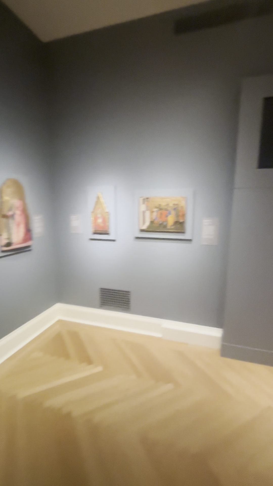
Video wide85.75s: Virgin on west wall; Magdalene and Saint Peter on north wall, followed by the projecting display.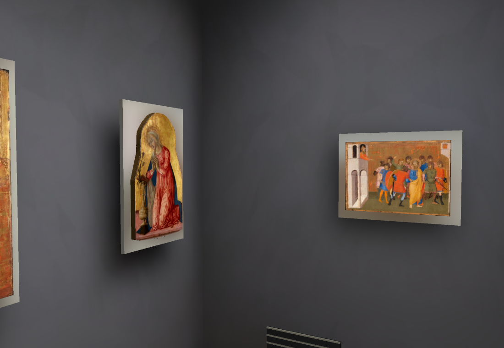
Current corner: Virgin and Saint Peter installed, display projection and vents added. Magdalene remains missing until its generated frame is fitted. Lighting and exact mounting positions remain under review.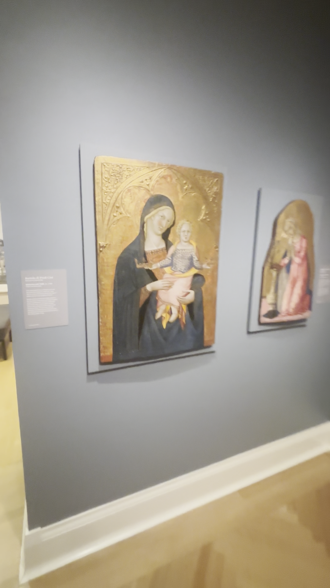
Bartolo di Fredi Cini · Madonna and Child20.207 · original video detail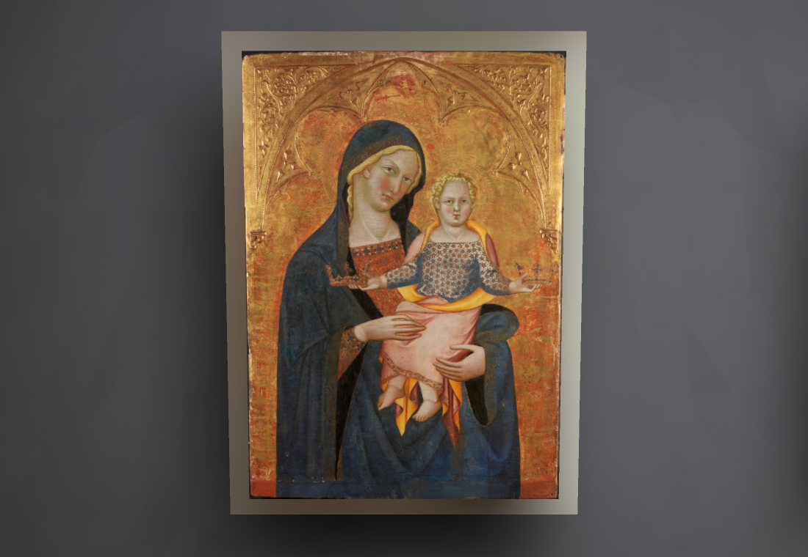
Bartolo di Fredi Cini · Madonna and Child20.207 · actual native render, with original painting and exposed wood outline. Grey support and placement remain provisional.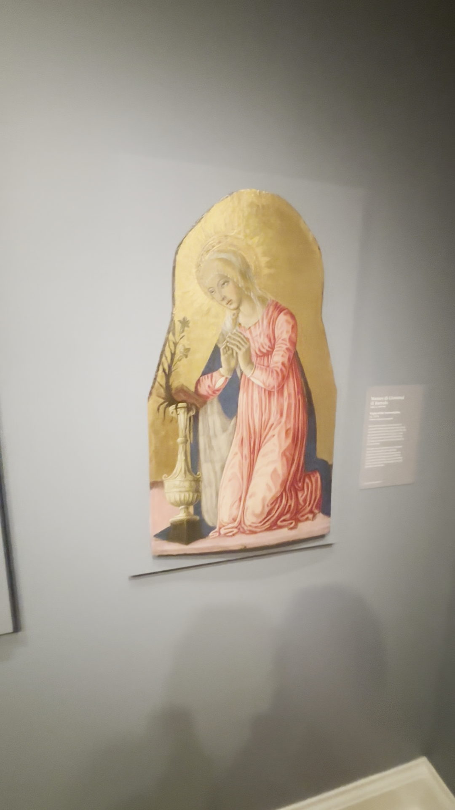
Matteo di Giovanni · Virgin of the Annunciation57.301 · original video detail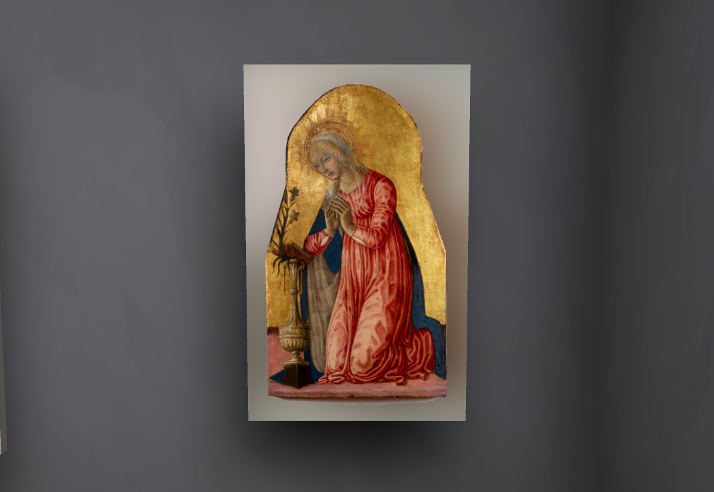
Matteo di Giovanni · Virgin of the Annunciation57.301 · actual native render, with original painting and exposed wood outline. Grey support and placement remain provisional.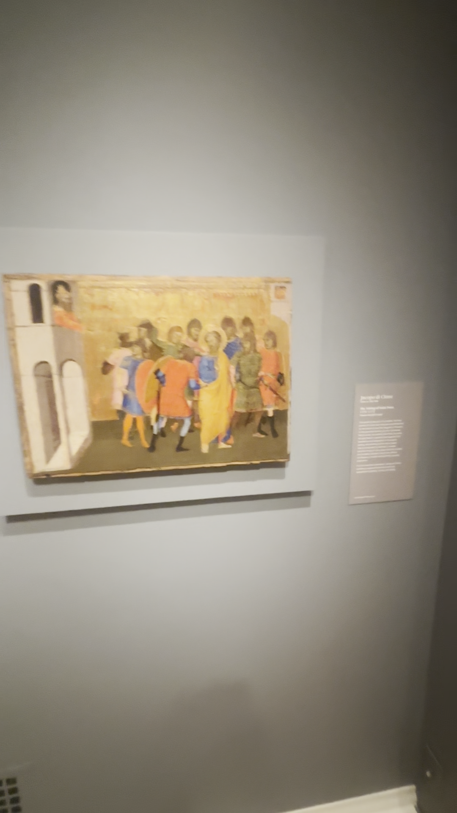
Jacopo di Cione · The Taking of Saint Peter22.047 · original video detail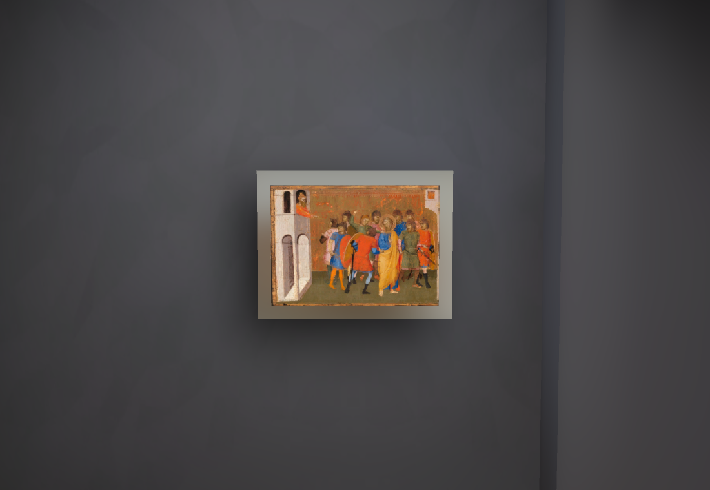
Jacopo di Cione · The Taking of Saint Peter22.047 · actual native render, with original painting and exposed wood outline. Grey support and placement remain provisional.Gabled frame for Mary Magdalene
Two separate Muse passes cost$0.02. The first was rejected for an invented inner triangle and blue wear. The corrected source-shaped guide and owner-approved warm-gold style produced the second candidate below. It needs proportion fitting and native geometry before installation; the authentic painted panel will remain separate.
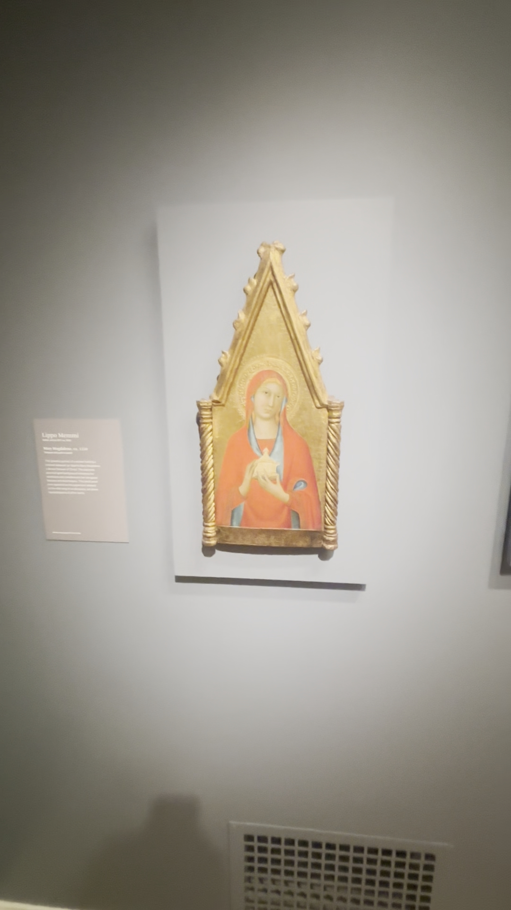
Original museum frame around Lippo Memmi Mary Magdalene21.250.Source guide: painted interior blanked while retaining the real gable and carved frame.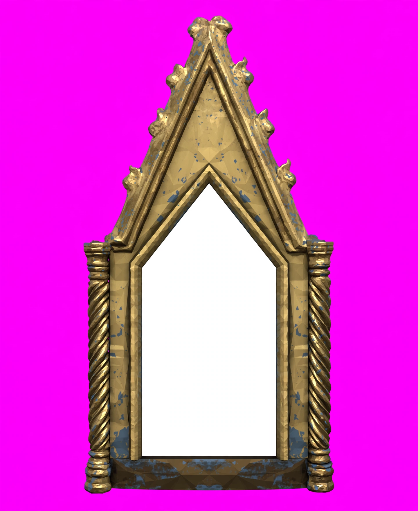
Rejected first pass: shortened opening and invented blue wear. Kept as failure evidence.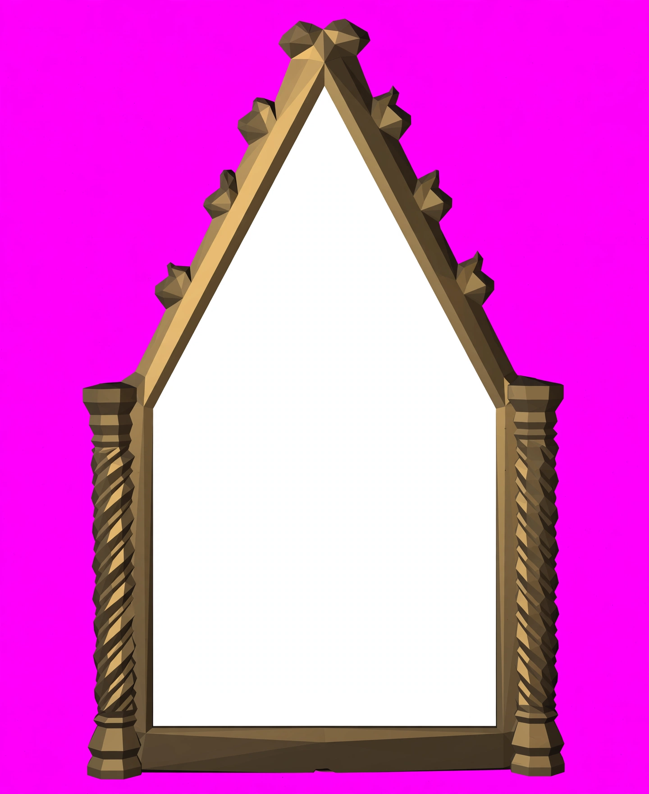
Corrected Muse candidate: high pointed opening, three crockets per slope, twisted columns and warm gold. Source proportions and relief still unaccepted.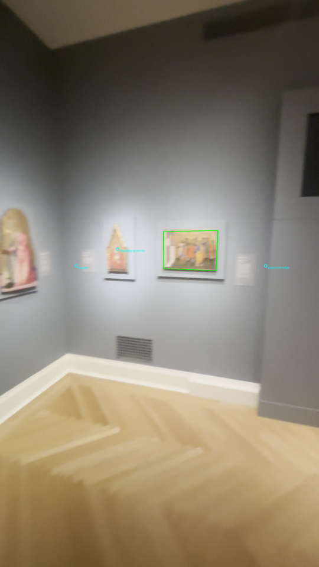
Source-local spacing ruler from the54×38.7cm Saint Peter panel. Hand picks and coplanar assumptions remain provisional.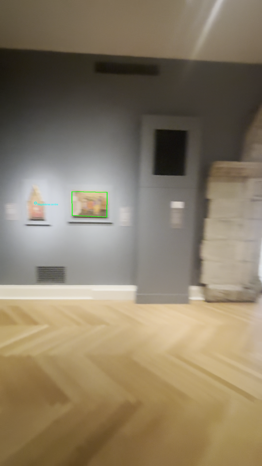
Held-out blurred wide: relative Magdalene/Peter spacing only. This does not prove exact room metres or object offsets.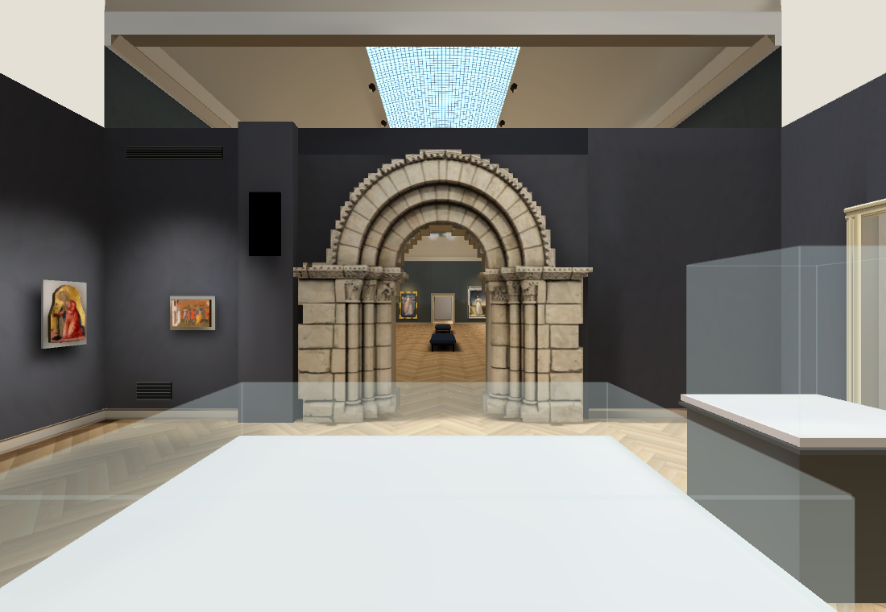
Current portal wall. Missing iron grille and further sculptures/case contents are still open.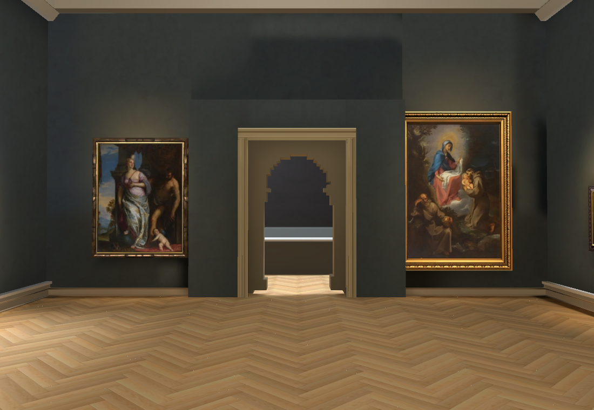
Existing Main Hall connection and23 original paintings retained. Hall wall palette, frame heights and portal reverse need more work.Current RTX Chrome: 154/154 navigation/camera checks plus a real keyboard round trip; p9530.00ms,ready5606ms on the local test host.794 baked surfaces. Native detail and wide renders inspected; no new native performance claim. Owning Shell repeat46/50, four existing failures retained; first44/50 included two animation timing failures that did not recur. Both complete films/logs preserved. Repository checks pass.60fps target and remote cold-load performance remain unverified or unmet.
Cumulative generation spend$0.74 actual/$0.75 conservative. Heartbeat disabled; sole main worker. Still unfinished: exact room geometry and placement, gabled frame installation, missing room objects, stairs, auditorium and modern gallery.
Current browser checks · Placement evidence · Current authored layout